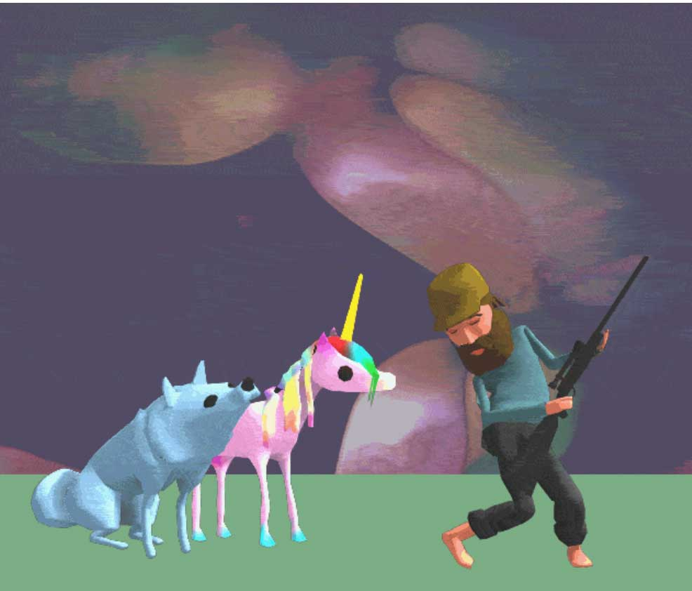
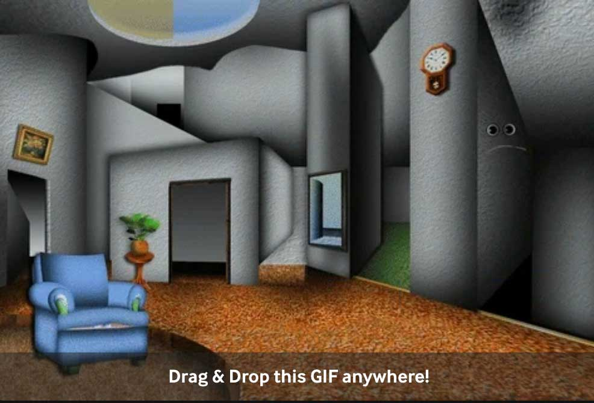
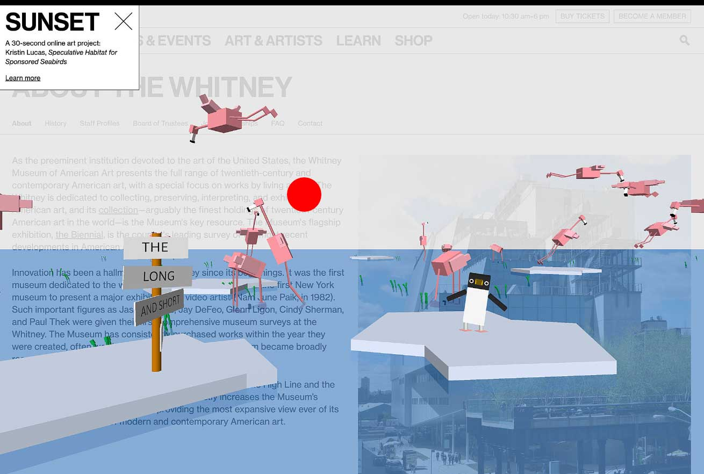
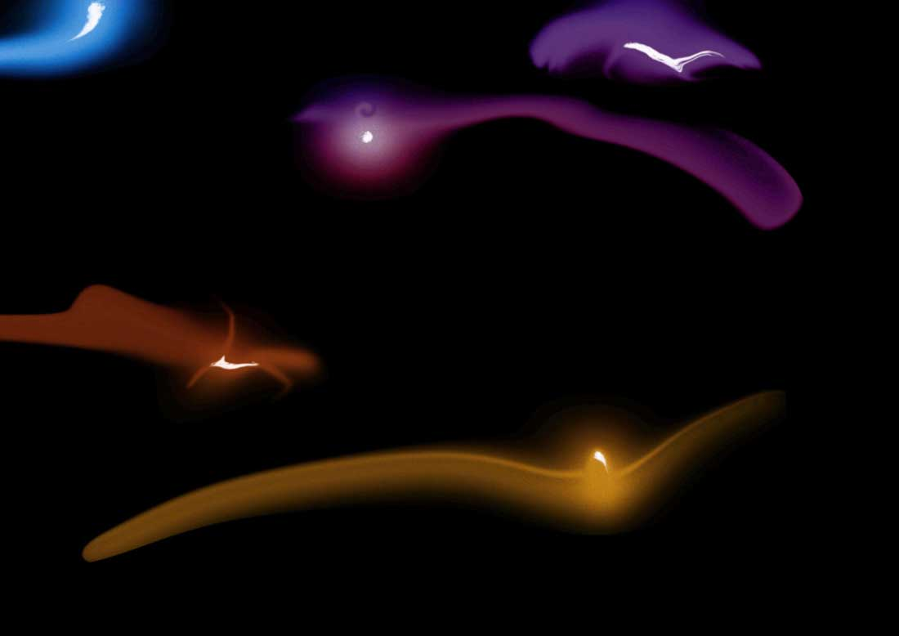
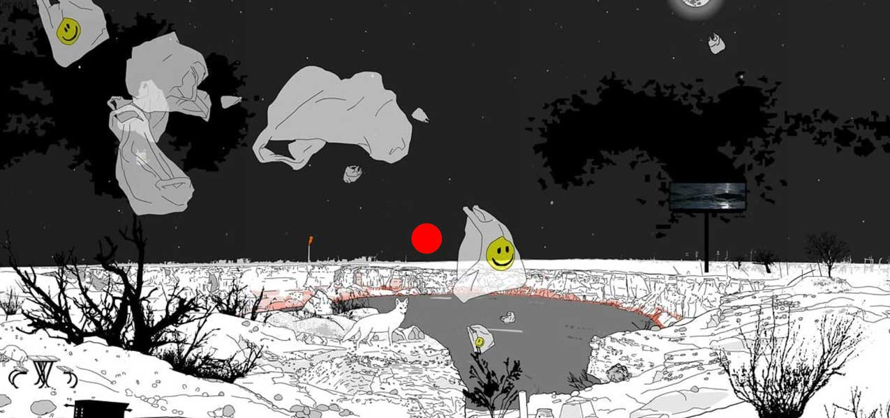
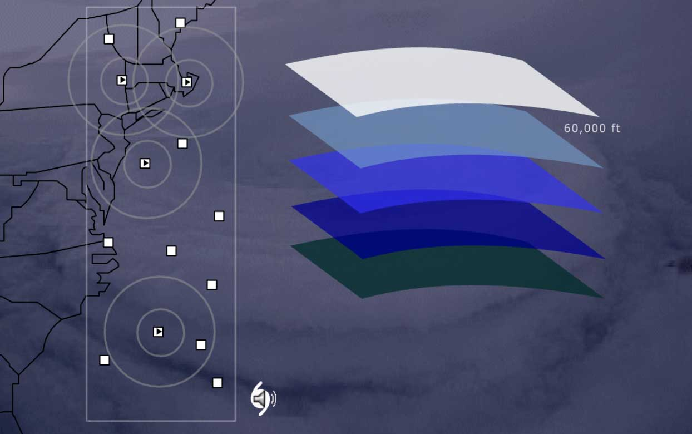
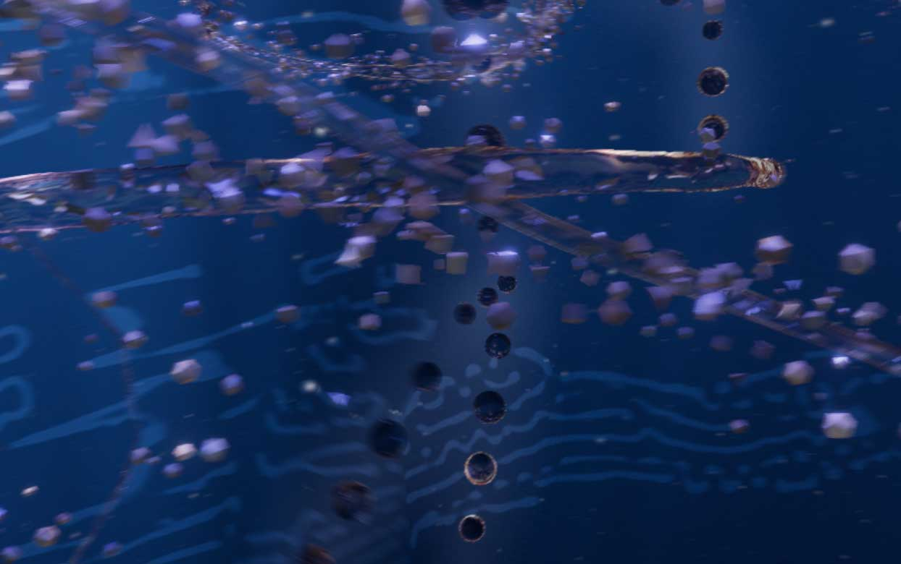
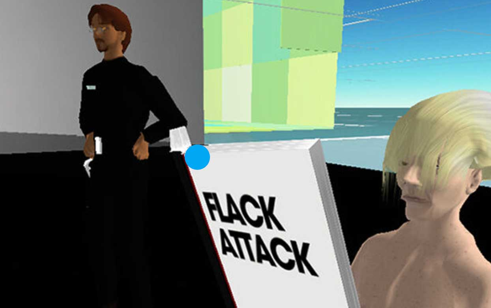

CSS FLOATS
GAllERY 8 WEB ART PROJECTS

Wolf + Unicorn,
Andrew Benson,
2014-2018

Conversation Pit,
Mas Guerrero,
November 2023

Speculative Habitat for Sponsored Seabirds,
Kristin Lucas,
2019-2020

Tumbleweeds,
Sara Ludy,
2022

Mesocosm (Wink, TX),
Marina Zurkow,
2012

atmospherics/weather works,
Andrea Polli,
2004

The Thinking Ocean,
Memo Akten & Katie Hofstadter,
2026

Flack Attack,
Simon Goldin + Jakob Senneby,
2005